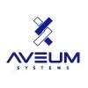

Dennis R. Gesker
dennis@gesker.com ᐧ https://dennis.gesker.com ᐧ +1202783202
Lake Oswego, Oregon ᐧ Fort Lauderdale, Florida ᐧ Three Forks, Montana
Core Competencies
| Leadership and Human Capital Management | Process and Change Management |
| Information Resource Strategy and Management | IT Performance Assessment |
| IT Project and Program Management | Capital Planning and Investment Control |
| Acquisition & Organization Integration | Cybersecurity/Information Assurance (IA) |
| Information and Knowledge Management | Enterprise & Software Architecture |
| Technology Management and Assessment | Technical Staff Training & Development |
Foundational Technologies
IT Strategy ᐧ Project Management ᐧ Team Leadership ᐧ Technical Staff Development ᐧ Software Development Life Cycle (SDLC) ᐧ Agile & Waterfall ᐧ Enterprise Architecture ᐧ Microsoft Dynamics ᐧ System Administration ᐧ Linux ᐧ NixOS ᐧ Windows Server ᐧ Kubernetes ᐧ Docker ᐧ Podman ᐧ DevOps ᐧ Blockchain & Cryptocurrency ᐧ SQL ᐧ Postgresql ᐧ MySql ᐧ MS-SQL ᐧ NoSql ᐧ MongoDb ᐧ DynamoDb ᐧ AWS ᐧ Java ᐧ Jakarta EE ᐧ Quarkus ᐧ Spring Boot ᐧ GIS ᐧ GeoTools ᐧ Qgis ᐧ SVN ᐧ Maven ᐧ GIT ᐧ Ansible ᐧ Terraform ᐧ Puppet ᐧ DevOps ᐧ Cloud
Background
Having 30 years of experience in the information technology field Dennis is proficient in a number of core technologies covering the scope of the Open Systems Interconnection Model; OSI Model.
Over the course of his career Dennis has worked with dozens of programming languages and foundational information technologies including all manner of products, gear, operating systems, databases, cloud based systems, utilized in both small (LAN), mobile (Domestic Carrier Level WAN) and global information systems; Outside the Continental United States (OCONUS).
Executive Profile
Possesses a well-balanced skill set which includes business operations, systems analysis and information technology, and team management.
This skill set is supported by strong communication skills and deep knowledge of numerous tools, techniques and analytical frameworks, which also proved useful in his role as a fiduciary, while a leader in technology field, and most recently the biotechnology industry.
Consistently demonstrates initiative, flexibility and agility in support of financial reporting, budgeting, operations, marketing and strategic diversification efforts within the particularly competitive telecommunications and data center contracting industry with an emphasis on cost reduction, process optimization with a focus on preventing organizational sunk costs.
Maintains a deep appreciation of the necessity and importance of operational security, a foundational belief engrained in the approach to information systems while operating and managing secure international computers and networks utilized earlier in his career while servicing the US State Department and related US Intelligence and Military organizations as required in critical TS/SCI environments. These system frameworks were reinforced by his experience in supporting infrastructure build outs in carrier level telecommunications networks and biotechnology fields where HIPAA regulations with regard to system development were considered elementary and the demands of fledgling proprietary AL/ML products being developed for global customers, clients, and project stakeholders.
Technology is ultimately about people. This is the core of an adopted mission to drive and support: Teams, Tech, Tools & Timing!
Candela Global, LLC, Portland, Oregon
Independent Contractor: January 2022 – Present
- US Patent Preparation
- Systems Architecture and Modernization
- MicroServices
- Quarkus, Rust, Kubernetes, Docker, Podman
- Kafka, RabbitMQ
- Postgresql Cron Module
- Monolith to Microservices Migration/Refactor
- Java/Jakarta EE to Quarkus with Apache Kafka
- Spring Boot to Quarkus (Vertx)
- Cloud and Cloud Native
- Migrate AWS to/from Linode
- Establish Greenfield Backend in Azure
- MicroServices
- CI/CD
- Terraform, Ansible, OpenTofu
- NixOS and Debian Containerization
- GitHub/GitLab Actions, Jenkins
- Private CA Authority Transport Layer Security (TLS) Systems
- Biometric Identity - DNA, Facial Recognition
- Machine Learning
- Pipeline Simplification
- Migrate Python Routines (Tensorflow) to/from Rust
- Analyze and mitigate model overfit
- DNA Identity Validation
- Deoxyribonucleic Acid Information System
- Mobile Applications
- Migrate JavaScript Applications to Flutter
- Migrate/Streamline REST Backend, gRPC and GraphQL
- Startup Support
- Cost Control - Cloud Spend Mitigation
- Budget Preparation
- CapEx & Depreciation Planning
- GIS Routine Validation
- ArcGIS
- Geotools & PostGIS
- ArcGIS Compliant Shapefile creation
Montana State University, Bozeman, Montana
Graduate Studies Refresher: Fall 2021 ONLY
- Artificial Intelligence (AI/ML) Ph.D. Participation
- Full Time Fall 2021
- Participate in Ph.D. Seminar
- Prerequisite Coursework
- Revisit Foundational Mathematics Course Work
- Logic, IT Systems, Linear Algebra, Etc.
- Revisit Foundational Mathematics Course Work
- Accepted to CS Ph.D. Program
- Elected to return to industry
Alamon, Inc., Kalispell, Montana
Chief Technology Officer: July 2018 – August 2021
- Define and represent the firm’s technological agenda
- Designed and Developed Mobile Application
- Enabled Division recovery
- $330,000 Loss 2018 to $3M Net Profit by 2021
- GIS Enabled Android System using AWS as Backend
- Includes GIS Data export/import/validation
- ArcGIS, Windmill, PostGIS, qGIS
- Includes Material Tracking and Inventory
- Includes GIS Data export/import/validation
- Real Time Reporting and Work Assignment
- Microsoft Dynamics Project Accounting Integration
- MS-SQL Pivot Table Reporting
- Automated IML Resistograph Analysis
- Bluetooth IML Resistograph Integration
- Enabled Division recovery
- Achieve organizational goals as defined in the firm’s strategic plan
- Ensure continuity & security of technical operations
- FULLY OPERATIONAL DURING COVID CRISIS
- Direct and Oversee Employees, Technology Development & Technology Support Teams
- Team: 2 IT Support Staff, 3 Full Time Developers, Contractors as Required
- Maintain firm’s technical knowledge base
- Technology Landscape and Industry Developments
- Employee Base Education & Professional Development
Alamon, Inc., Kalispell, Montana
Operations Manager: Information Technology: March 2012 – June 2018
Sept 2017: Elected Trustee of ESOP Board
May 2017: Elected Company Officer; Secretary & Treasurer
- Achieved significant cost reduction by building in house employee Payroll and HR portal
- 8,032 Administrative Man Hours Saved in initial year (2014)
- 15,008 Administrative Man Hours Saved Per Annam by 2018
- Reduced project analysis time
- Project analysis
- Real Time Revenue Recognition Estimates
- Bid Turn Around to Customer reduced by 32% by 2018
- $ 217,000 Direct Cost Reduction
- Project Manager Level Costs Saved
- (Cash Basis) in 2015
- Project Manager Level Costs Saved
- $ 432,000 Direct Cost Reduction
- Project Manager Level Costs Saved
- (Cash Basis) by 2018
- Project Manager Level Costs Saved
- Ensure IT support and communication capabilities of highly mobile workforce
- 37 States in FY 2017
- 45 States in FY 2018
- Architect and Design for Enterprise Applications
- Project Management and oversight of SDLC using Agile, Kanban methodologies.
- Full Stack Java EE Development
- SQL Modeling and Normalization
- Manage software development team and IT systems and support personnel
- Accelerate knowledge base and capabilities of junior developers and administrative support teams
- Define and Prepare Project Objectives, Design Documents and Budgets
- Prepare Specifications, (Non-Disclosure Agreements) NDAs and (Requests for Pricing) RFPs for Outsourced Development Efforts
- Recruit, Hire and Train New Team Members
United States Department of State, Rome, Italy
United States Embassy, Rome, Italy
Information Management Specialist: September 2010 – February 2012
- Information Management Specialists (IMS) manage and operate worldwide information technology infrastructure, including PC local and wide area networks, telecommunications systems, telephone and UHF/VHF programs, and diplomatic pouch and mail services
- Ensure proper dissemination of official classified and unclassified telegraphic traffic
- Embassy lead on dissemination rule optimization for State Messaging and Archive Retrieval Toolset
- As Technological Platform/Chassi Role Provide Support for Resident Agency Personnel At Post
- SIPRNet, NIPRNet, SMART, SAVANT, VIPRE, KPS, TMAP, CHRONOS, AD content transfer, etc.
- Perform system administration of classified local area network (ClassNet)
- Ensure network software and hardware meet DoS baselines
- Ensure compliance with Diplomatic Security (DS)
- Provide operational assistance and direct training to users
- Create and maintain various Information Processing Center (IPC) Standard Operating Procedures (SOPs)
- Serve, on a rotating basis, as duty officer providing 24-hour on-call availability for high precedence telegrams and integrity of post communications systems and circuits
- Maintain and test emergency communications equipment including alternate route and High Frequency (HF) radios
- Safeguard, account for, and properly dispose of classified equipment and material (including cryptographic) in conformance with all agency IRM and DS standards
- Ensure maintenance and accuracy of information technology inventory including use of the Integrated Logistics Management System (ILMS)
Alamon, Inc., Kalispell, Montana
Manager – Special Project: September 1996 – September 2010
- Developed Method of Procedure for Telecommunications (Pole) asset infrastructure and inspections based on RUS standards. Developed supporting survey collection application using GeoAge FAST (running on Microsoft ME platform) and back end file processing including record import, verification & reporting application using Java SE, Java EE and MS-SQL technologies.
- Trustee and member of the company's Retirement Plan Investment Committee. Committee/team provides oversight and direction for transition of the company's pooled profit sharing plan to employee self-directed plan which is 401(k) addition ready.
- Provided research and conceptual design services in support of grant application ($25M) to FCC for construction of private medical fiber optic network. $14M awarded to date in the pre-engineering stage.
- Implemented MS Great Plains Dynamics 6.5 & MS SQL 2000 based accounting system. Update: Deployed subsequent upgrades. Present system is MS-Dynamics GP version 10 & MS-SQL 2008 system.
- Designed and implemented TL9000-V R3.0/R3.0 (ISO 9001:2000) Quality Management System resulting in successful certification. Project included in depth process identification, review and redesign in close coordination with top management and operational departments.
- Designed Developed web based Database and reporting system using Java technologies (J2SDK 1.4.2, JBoss 3.x J2EE Application Server, JSP, JDBC) which facilitated integrated reporting across several data sources; MS-SQL 2000, MS-Access, PostgreSQL. Update: Upgraded this system to MS-SQL 2008, Java JDK 6, Java EE 5 using JSF, Glassfish & JPA/Toplink. Enhanced application with Swing based client application launched via Java Web Start.
Patents Pending
Systems and Methods for Distributed Blockchain Monitoring and Inherent Latency Compensation
Filed: 2023-May-25
Application Number: 18/323408
Document: US-20240303665-A1
Abstract:
Methods, systems and computer readable media for managing (e.g., queuing, batching, submission, and logging) and monitoring distributed blockchain operations such as cryptocurrency operations and transactions by client application systems and end users of a client application system to compensate for the inherent latency in distributed blockchain systems.
Systems and Methods for Economic Price Discovery In Social Media Networks Including Games
Filed: 2023-May-25
Application Number: 18/323409
Document: TBD
Abstract:
Methods, systems and computer readable media for economic price discovery in social media networks including games are described. For example, a system and method can include assessing content, enhancing the quality of end user interaction, and overall utility of a social media network or information system by performing price discovery utilizing a user interface and price discovery mechanism among assessment controls utilized on a social media platform or application.
Publications
Two Must-Have Tools for Jakarta EE Developers
InfoQ.com - April 2022
Enter Jakarta EE: an Inoculation Against Fear, Uncertainty and Doubt in the Java Community
Linux Journal No. 287 June 2018
Blog: Challenges and experiences with enterprise grade software systems and supporting components
WordPress - On-Going
Introducing the Culture of Free and Open Source Software to the Department of State
Internally Circulated Strategy Paper - Department of State (SECRET/NOFORN)
Department of State - November 2010
JSPWiki/Glassfish Install-18 Part Blog Series
http://gesker.blogspot.com - March 2007
Migrating to Mozilla Thunderbird
SysAdmin Magazine - Volume 14 No. 6 -June 2005
J2EE: A Shotgun Start
Byte.Com - January 2003
Alternatives for Dynamic Web Development
Linux Journal No.83 - March 2001
Education
University of Pittsburgh, Pittsburgh, Pennsylvania
Katz Graduate School of Business: Masters in Business Administration (MBA)
Curriculum Track: Finance / Valuation
Graduated: 2001
University of Pittsburgh, Pittsburgh, Pennsylvania
Katz Graduate School of Business:
Masters in Management Information Systems (MS-MIS)
Curriculum Track: Software and Database Development
Graduated: 2001
Drexel University
Formerly: Medical College of Pennsylvania & Hahnemann University (MCPHU)
Bachelors of Science (Health Science)
Curriculum Track: Health Science and Humanities
Graduated: 1996
Central High School
Go, Lancers!
High School Diploma
Curriculum Track: Academic
Graduated: 1991
Training and Certifications
TechStrong
- Evolution of Transactional Databases
- 2023-Jan
Foreign Service Institute
- PN106 Orientation - Foreign Service Specialist
- PS380 Introduction to Information Resource Management
- YW279 Department of State Applied Systems -- MS-Active Directory & MS-Exchange
- YW119 Overseas Operations for IRM Classified Pouch Operations COMSEC and CRYPTO
- YW533 S.M.A.R.T System Admin Diplomatic Communication and Cables
- YW278 Citrix Metaframe Presentation Server Admin (Earned Citrix Administrator Certificate)
- YW302 FASTNet Post Operation and Maintenance
- YW268 UHF/VHF Emergency and Evacuation
- YW142 Basic Telephone - Nortel/Avaya Norstar Key System Programming
- YW286 Simulated Operations
- YW497 Nortel/Avaya Meridian 61C/11C
- YW496 Nortel CallPilot
- MQ911 Security Overseas Seminar
Professional Organizations
- Jakarta EE Ambassadors
- Leadership Council
- jakartaee-ambassadors.io
- Society of Catholic Scientists
- Member (Graduate Student)
- https://catholicscientists.org
- Eclipse Foundation
- Member
- Eclipse.org
- Java Community Process
- Member
- Technology Specification Organization
- Jcp.org
- Electronic Frontier Foundation
- Member
- Eff.org
- Institute of Electrical and Electronics Engineers
- Associate Member
- Ieee.org
Projects
Aveum Systems - DNA Based ID and Tracking System
Date: Spring 2024
Supported Aveum Systems, Inc. in formulating their technological road map for developing massively scalable DNA information systems and related technologies which will enable the construction of identity systems that are hyper-secure, cryptographically rigorous, AI/ML backed and are at the same time AI resistant.
Aveum Systems, Inc. is a Delaware Corporation operating in the US and Europe targeting pilot programs in Africa and the Kingdom of Saudi Arabia.
AlaTrac - Monetize & Market Ready
Date: June 2021
AlaTrac is a field service scheduling, asset tracking and assessment tool that has been leveraged by internal Alamon field service teams to assign, inspect and capture key attributes of industrial and utility assets including telephone poles, energy storage units, cellular towers and related infrastructures. While the solution is being leveraged by Alamon’s traditional lines of business, the objective is to productize the solution to third parties and create a new source of revenue for the company.
AlaTrac is an open standards based, hybrid application that is currently running in the AWS cloud. While the solution is intended to be as easy to use as an excel spreadsheet, the platform’s capabilities extend beyond data input. AlaTrac’s core features include the ability to geolocate an asset, assign an asset for inspection, establish roles and set field based rules and intelligent routing for the intake of data by inspectors, including images, telemetry data from bluetooth sensors/device. These attributes are then captured via an Android based mobile application (Field Collector). Once captured, the mobile application monitors for connectivity and once connected (either via cellular or wifi network) intelligently publishes inputs and data back to the core platform (AlaTrac) based on data type and available bandwidth.
While the AlaTrac has been leveraged internally on a wide range of projects, the solution is currently beyond a Minimal Viable Product, is in beta and continues to be prepped and hardened for third party access based upon the efficiency value and revenue facilitation it has already delivered for internal use cases.
Transform Application Architecture
Date: July 2019
Initiate, move, transform and refactor critical legacy applications from monolithic to microservices, distributed systems leveraging Jakarta EE, MicroProfile, PostgreSQL, MongoDb, Lucene (Elastic Search), GeoTools (Java GIS libs), Hadoop and the Hadoop ecosystem of add ons (Hive, Spark, etc.) Leverage Cloud vendors where appropriate.
Restructure Technology Department
Date: March 2018
Engaged and conferred with outside consulting and subject matter experts with regard to skill sets and technologies most appropriate for new green field software development projects. Acquired personnel to properly support ongoing technical operations needs. Optimized current software development processes to increase effectiveness of production of present and legacy development efforts. Added development personnel for go forward development efforts. Ensured that department structural changes are safely within the organization’s financial constraints and are ready to support the organization's strategic growth initiatives.
Federal Business Opportunities Process Development
Date: March 2017
Designed, implemented and graphically mapped and trained personnel in a new business process for cross functional and cross departmental teams to absorb, screen, evaluate, pursue and track both direct and subcontract opportunities (and sales contacts) as generated by the U.S. Federal Business Opportunity job and purchasing solicitation system. ( http://FBO.gov ) The system as designed not only enables but encourages effective communication between team members working on this initiative from different departments.
Geographic Information Processing Cost Reduction
Date: February 2017
Extended effort to reduce/avoid significant licensing fees associated with ArcGIS Desktop and associated products by introducing Open Source alternatives. Most of the company’s ordinary usage and data processing of ESRI compatible (shp, gdb, csv, kml, etc.) and other GIS file formats had relied upon the proprietary and expensive software solution. Introduction and training of key organizational members and users on the alternative (e.g. QGIS, GDAL and PostGIS) Open Source products and database extensions all of which have no licensing fees but are capable of performing the same functionality as required internally by the company enabled savings equivalent to that of several full time administrative personnel.
MS-Access Marketing Database
Date: November 2015
As a team built a MS-Access 2013 database that provides an efficient system for customer contact interaction tracking & follow up on bid opportunity tracking and revenue projection.
The team's design had specific goals of increasing initial entry customer and contact speed, reducing need to enter duplicate data and reducing update time required by end users. Hence, the database schema is highly normalized and screen navigation is minimized to the point of being austere.
The system has a (somewhat) novel functionality built in where, based on team defined business procedure triggers, the application sends email calendar events/notification using standards compliant "ics" attachments. This functionality is completely independent of the email client installed on the user's PC so compatibility across mail client versions are not an issue on this project. Only the appropriate team members -- and their administrative staff -- on any specific customer interaction or bid opportunity follow-up are notified, reducing "noise" often associated with many cloud solutions.
Tracking and revenue projection reports have already been outlined/designed by the team and are pending automation. Application behavior, events, automation and reporting are of course written using Visual Basic for Applications (VBA.)
Custom VBA code written for this project will be useful should we choose to hook to other applications within the Microsoft product line and perhaps even useful in pushing data to other custom applications within Alamon's stable of custom applications.
It has the benefit of allowing customization and little to zero recurring cost (not much maintenance is anticipated) as compared to the cloud solutions we researched.
Marketing Effort Support
Date: April 2016
In the first quarter of this year I have been recruited by my leadership team to become more deeply involved both initiating direct customer contact and in a technical support role in the company's overall marketing effort.
This has been an enjoyable diversion from my deep diving into technical projects and it has been a learning opportunity in observing and participating in the management of customer accounts serviced by my firm and by my senior management.
Enhanced Project Reporting Site
Date: August 2015
MS-Dynamics Project Reporting site built on the Java EE platform using GlassFish 4.1, JSF (PrimeFaces) and Eclipselink.
The site pulls necessary project data from the accounting system at the MS-SQL database layer to securely issue project information, performance, trending and charts to leadership, managers and supervisors.
The site negates the cost associated with adding additional MS-Dynamics licenses and enables real time distribution of information to managers and supervisors not physically located at our company HQ.
File Management System
Date: May 2015
Built a custom site on the Java EE platform using GlassFish 4.1, JSF (PrimeFaces) and Eclipselink.
The site pulls necessary payroll data from the accounting system at the MS-SQL database layer to securely issue weekly payroll information to employees. It also allows administrative staff to publish documents by simply dropping documents into a shared Windows Domain network folder.
The site completely negates the need for ADP payroll services and its associated cost, US Postal Cost and fosters the rapid distribution of documents (policy, procedure, safety, etc.) to employees.
Regular Duties and Miscellaneous Competencies
Date: September 1996 - Present
Direct and manage special projects and initiatives and perform special assignments. Identifies the need for special projects and ensures appropriate representatives from various directorates/organizations and subordinate units are included.
Experience includes specialized demonstrated knowledge of, and ability to apply, policies, practices and principles of management and to effectively supervise a subordinate work force that includes subordinate supervisors or leaders. Knowledge of principles and practices of team building. Demonstrated knowledge of, and ability to apply, extensive knowledge of software technology and project management to include software system acquisition life-cycles; software engineering disciplines; quality assurance; CM; project planning, tracking, and oversight; functional processes; and technical alternatives. Utilize IT-related experience that demonstrates each of the four competencies: Attention to Detail, Customer Service, Oral Communication, and Problem Solving.
Advise and provide counsel to employees regarding policies, procedures, directives of management and make decisions presented by subordinate personnel.
Balances workload of employees for software development.
Plan and coordinate all phases of acquisition, implementation and integration of IT assets.
Develop specifications, justifications and economic analysis in support of selection and acquisition actions.
Provide oversight and customer support for designated wireless communication equipment; design database applications according to data modeling.
Develop customer support policies, procedures, standards, and customer service performance requirements.
Provide users with recommendations concerning upgrades or new equipment to improve operations.
Appoint equipment custodians, train and provide guidance to monitor the physical installation and utilization of equipment.
Conduct annual physical inventories of Information Technology (IT) equipment.
Coordinate and monitor facility preparation for IT equipment and systems.
Administers counseling sessions to employees for policy directives and procedures.
Ability to select, elect and promote candidates for vacancy positions.
Initiates appraisal feedback sessions for employees during quarterly evaluations.
Identifies developmental needs for employees for on-the-job training.
Evaluate work performance of subordinates; advise and provide funding requirements and financial guidance that is responsive to the organization's needs; such as policies, procedures, directives of management and administrative matters.
Make decisions on work issues submitted by subordinate personnel or by contractors.
Monitor, review, check and verify requests for spending of funds from approved operating budgets.
Formulate life cycle cost of IT resources and anticipated enhancement and upgrades.
Technical expert in the development of short and long-term strategic, tactical and operational plans pertinent to organization upgrade and migration programs.
Analyzes business processes and workflow procedures, gathers information from consultation with managers and individual users, studies work products, and observes work processes.
Synthesizes findings into a proposal which translates functional requirements into design specifications that include hardware, software, database, and other requirements which will meet the business needs of the organization.
Conducts feasibility studies including research of organizations' functional descriptions and objectives to determine Information Technology (IT) system requirements and applies fact finding processes to identify methods to meet those needs.
Supervise the Automated Information System (AIS) Life Cycle Support Section, providing staff and functional area representatives with high level technical expertise for System/Software Life-Cycle Management.
Supervises the Software Services Section. Prepares correspondence, documentation, reports, briefings, etc. Working independently or with a team member(s) identifies the target audience; timeliness and resources needed to complete responses to various inquiries.
Coordinate on development and evaluation of acquisition plans, application software, hardware, communications and project related technical activities.
Evaluate work performance of subordinates and arranges planning, designing and carrying out objectives for coordinating on projects.
Design and develop application software prototype according to the requirements.
Test and validate application code according to quality software standards.
Modify and upgrade application code according to software change requests.
Troubleshoot software application failure to determine if problems exist in hardware or software.
Perform software control of data models, database structure, design modularity, programming languages, software pleases and technical issues.
Ensure systems meet interoperability and supportability requirements and expectations.
Monitor and review the application software development programs provided under commercial contracts, interagency support agreements or assignments.
Ensure system architecture compliance with security regulations and instructions.
Monitor IT requirements and determine the need for new or updated IT capabilities.
Attention to Detail - Review complex data from multiple sources and determine relevant information to a given situation. I draft, edit and disseminate written reports and status updates that are factual, timely and error free.
Customer Service - Develop and maintain relationships with customers with diverse needs. I provide technical and complex information about products and services. I assess the needs of customers and identify or tailor products and/or services to meet their needs. I resolve highly complex or non-routine problems, questions, or complaints and direct the most complex problems, questions, or complaints to the appropriate person.
Oral Communication - I communicate, explain, or defend moderately complex ideas or information clearly. I listen to others and recognize potential miscommunications.
Problem Solving - I use logic to identify alternatives to solve moderately difficult problems. I identify and solve problems by gathering and applying information from a variety of materials or sources that provide several alternatives.